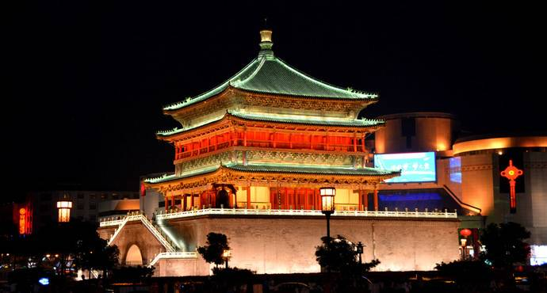

巴蜀之旅（一）
一不小心就成为了研究生，距离女博士就差一步，这一步我是没有勇气迈出去了。老爸总说，你啊你啊最有福了，上学上这么多年。是啊，上学真好啊。 西安是座古城，对于大部分人来说大概这就是第一印象。说实话，刚来西安那半年，对西安实在无感，可能因为好友都去了北京或者回家，感觉自己分外孤独，连着西安也喜欢不起来。 一直不知道会因为一个人喜欢一座城是什么感觉。没想到慢慢我因为一群人越来越喜欢西安，西安真是一座很棒的城市。 晚上的钟楼很漂亮，还有街头歌手弹吉他唱歌，很多人坐在台阶上吹风听歌，很喜欢这种感觉。研究生有三年，比起大学少了一年，却比大学快的多得多，真是一眨眼就到了研三 交了几个好友，成功晋升为吃货中的一员。研一小组长组织了一次秦岭烧烤，正式拉开美好的吃吃吃的研究生生活；小组长不是白叫的，自带美食雷达，自带吃货气质，然后就一发不可收拾了。各种火锅、串串、自助来者不拒；这样的情况研二上半年最为严重，几乎每周都要出去约饭，养成这个厉害的习惯后，周末约饭成了一周为之奋斗的目标。有什么是火锅串串点亮不了的呢？在西安吃的火锅比过去多年攒起来的都要多，以前不吃辣的我，现在也被带的无辣不欢，西安的火锅串串配冰封，好吃好吃好吃！ 突然有一天，我的小伙伴不再满足于西安的美食，于是就有了三天的巴蜀之旅。是的，我们组团去重庆成都吃火锅吃串串。不过， 火车上的时光并不美好，一晚上几乎没怎么睡，奇怪的是一下火车就精神抖擞。
第一站：重庆
第一顿饭就是重庆小面还有凉糕，第一次吃凉糕，还有个小插曲，由于人很多，我们和三口之家拼桌，那个小娃娃简直可爱， 我 坐小娃娃旁边，指着他手边的凉糕问我同学这个好吃吗？是什么呀？小娃娃特别善良挖了一勺要喂给我吃，我连忙说谢谢不用了。 当时就对重庆好感度爆棚，小娃娃前途无量，我肯定。
 小面感觉就是从辣椒油中泡出来的，凉糕蘸着红糖汁，凉凉的很不错。
吃面旁边是宋庆龄在重庆的故居，门票2元，去瞻仰下。二层小洋房很显眼，设计很别致，一看就很喜欢，看了人家当年的生活品质和格局，才觉得自己怎么活得有点点糙。以前总在电视剧里面听到防空洞，在小楼看到真正的防空洞。
然后，很俗气的去坐了坐皇冠大扶梯，没有极限挑战里面的好看，旧旧的，不过真的蛮陡的，也很长，重庆的道路啊真是3D的，幸好我的小伙伴全能，我跟着跑就行。
接着去磁器口，走之前，师姐特意嘱咐如果去磁器口帮她带麻花，这成功引起我们的好奇心，到底什么样的麻花这么好吃。真的是和一般的麻花不太一样，因为有麻辣味的，重庆简直吃辣椒长大的嘛。来都来了，不买点，岂不是对不起路费和自己的脚，买吧，
买了好多包，我承认现在有点后悔，不过，当时开心就好。然后，好奇心驱使下，买了豆腐脑，竟然也是辣的，在下真心服了。
小面感觉就是从辣椒油中泡出来的，凉糕蘸着红糖汁，凉凉的很不错。
吃面旁边是宋庆龄在重庆的故居，门票2元，去瞻仰下。二层小洋房很显眼，设计很别致，一看就很喜欢，看了人家当年的生活品质和格局，才觉得自己怎么活得有点点糙。以前总在电视剧里面听到防空洞，在小楼看到真正的防空洞。
然后，很俗气的去坐了坐皇冠大扶梯，没有极限挑战里面的好看，旧旧的，不过真的蛮陡的，也很长，重庆的道路啊真是3D的，幸好我的小伙伴全能，我跟着跑就行。
接着去磁器口，走之前，师姐特意嘱咐如果去磁器口帮她带麻花，这成功引起我们的好奇心，到底什么样的麻花这么好吃。真的是和一般的麻花不太一样，因为有麻辣味的，重庆简直吃辣椒长大的嘛。来都来了，不买点，岂不是对不起路费和自己的脚，买吧，
买了好多包，我承认现在有点后悔，不过，当时开心就好。然后，好奇心驱使下，买了豆腐脑，竟然也是辣的，在下真心服了。  吃饭在磁器口吃的鸡杂和毛血旺，不管了不管了，爱长痘痘就长吧，毛血旺太好吃，好吃到忘记拍照片。
我们不是光来吃的，还去了四川美术学院，美女好多啊，说话都是轻声细语的，搞的我都不敢大声笑了。和小伙伴装了一会淑女，是的，我们可以是小仙女。在学校转了一会，感觉设计感是比理工学校好多了。川美外面是一条涂鸦街，很好看，很个性，很有意思，我在想到底是怎么建的？然后，小伙伴的鞋不行，去买了一双雪地靴，可见我们走了多少路，简直太拼了。不过，这还没有到真正的项目。
火锅啊火锅，小伙伴网上查攻略，说解放碑旁边有一家莽子火锅，受众人追捧，事实证明不是骗人的，因为人真的超级超级超级多。排队排了2个多小时，可见是有多好吃，寒风凛冽，排队都没地方坐，我和两个小伙伴拿出纸垫在旁边的台阶上冷呵呵，凄凄
惨惨，又困又饿又累等着这个好吃到爆炸的火锅。火锅店的环境极其恶劣，真的是恶劣来形容一点不为过，窗户都是没有的，只有几根棍棍，终于等到老板叫我们的号码，简直跟中奖了一样。我们一致同意，想吃什么点什么，想点多少点多少，总之一句话，请把委屈都吃出来。于是我们点了......
当然，不止这些，好像吃了两波，不重要，吃完火锅，觉得自己终于活过来了，真幸福，这天是2016年的最后一天，也算是苦尽甘来，2017年一定是幸福的一
年。解放碑跨年数倒计时和洪崖洞只能选一个，我们觉得傻兮兮在这里数数字很尴尬，就毅然决然
决定去洪崖洞，跨年什么时候变成这么大的一件事，往年我都是和舍友一起睡过去的。可见我真是老了，竟然有这么多这么多的人守在这里等着倒计时，还有好几车警校的学生把解放碑围起来了，竟然戒严了。我们几个人从里面出来感觉气场都不一样，外围可怜的同学羡慕的瞅一眼。
好像就我们几个是往外走的。吃的饱饱的，走路到洪崖洞，洪崖洞真的漂亮，除了漂亮，我好想没有别的词汇了，语文高考完就还给老师了。事实证明，打脸好像每个人都有，逛完洪崖洞，还没到
12点，好像又觉得跨年是一件需要仪式感的项目，就毅然决然决定走回去倒计时，傻傻的等了十几分钟，终于听到里面的朋友们嗷
嗷倒计时，我们赶紧跟上节奏，哈哈哈哈哈哈，怎么这么搞笑，好像出来玩忘记带脑子。大家一起放气球，一起欢呼，就这么来到
了2017，出来和小伙伴一起跨年还是比在宿舍睡觉要好玩，虽然我还是觉得有一丢丢傻。
吃饭在磁器口吃的鸡杂和毛血旺，不管了不管了，爱长痘痘就长吧，毛血旺太好吃，好吃到忘记拍照片。
我们不是光来吃的，还去了四川美术学院，美女好多啊，说话都是轻声细语的，搞的我都不敢大声笑了。和小伙伴装了一会淑女，是的，我们可以是小仙女。在学校转了一会，感觉设计感是比理工学校好多了。川美外面是一条涂鸦街，很好看，很个性，很有意思，我在想到底是怎么建的？然后，小伙伴的鞋不行，去买了一双雪地靴，可见我们走了多少路，简直太拼了。不过，这还没有到真正的项目。
火锅啊火锅，小伙伴网上查攻略，说解放碑旁边有一家莽子火锅，受众人追捧，事实证明不是骗人的，因为人真的超级超级超级多。排队排了2个多小时，可见是有多好吃，寒风凛冽，排队都没地方坐，我和两个小伙伴拿出纸垫在旁边的台阶上冷呵呵，凄凄
惨惨，又困又饿又累等着这个好吃到爆炸的火锅。火锅店的环境极其恶劣，真的是恶劣来形容一点不为过，窗户都是没有的，只有几根棍棍，终于等到老板叫我们的号码，简直跟中奖了一样。我们一致同意，想吃什么点什么，想点多少点多少，总之一句话，请把委屈都吃出来。于是我们点了......
当然，不止这些，好像吃了两波，不重要，吃完火锅，觉得自己终于活过来了，真幸福，这天是2016年的最后一天，也算是苦尽甘来，2017年一定是幸福的一
年。解放碑跨年数倒计时和洪崖洞只能选一个，我们觉得傻兮兮在这里数数字很尴尬，就毅然决然
决定去洪崖洞，跨年什么时候变成这么大的一件事，往年我都是和舍友一起睡过去的。可见我真是老了，竟然有这么多这么多的人守在这里等着倒计时，还有好几车警校的学生把解放碑围起来了，竟然戒严了。我们几个人从里面出来感觉气场都不一样，外围可怜的同学羡慕的瞅一眼。
好像就我们几个是往外走的。吃的饱饱的，走路到洪崖洞，洪崖洞真的漂亮，除了漂亮，我好想没有别的词汇了，语文高考完就还给老师了。事实证明，打脸好像每个人都有，逛完洪崖洞，还没到
12点，好像又觉得跨年是一件需要仪式感的项目，就毅然决然决定走回去倒计时，傻傻的等了十几分钟，终于听到里面的朋友们嗷
嗷倒计时，我们赶紧跟上节奏，哈哈哈哈哈哈，怎么这么搞笑，好像出来玩忘记带脑子。大家一起放气球，一起欢呼，就这么来到
了2017，出来和小伙伴一起跨年还是比在宿舍睡觉要好玩，虽然我还是觉得有一丢丢傻。嗨，你好2017！嗨，你好重庆！
<<< 从前慢 巴蜀之旅（二） >>>